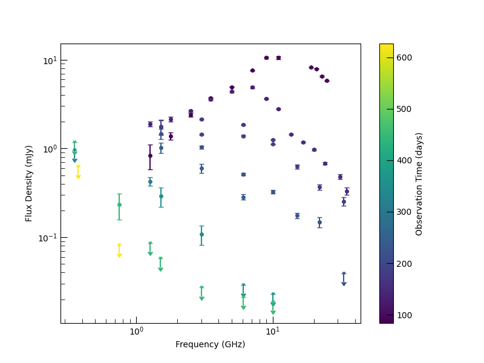
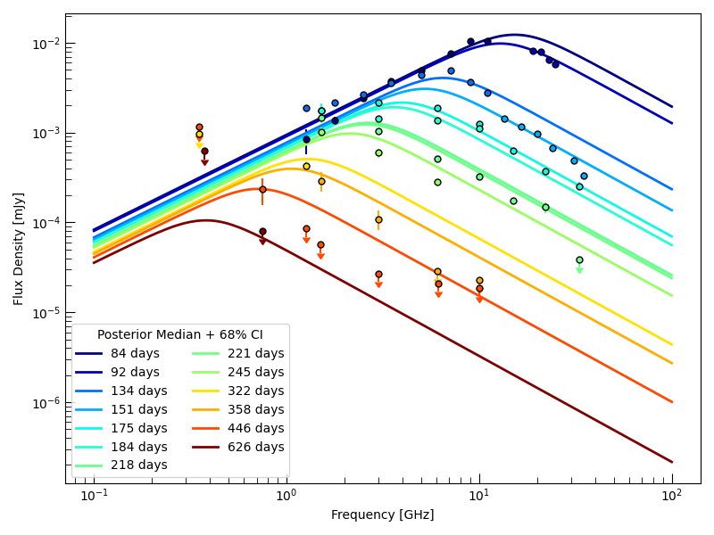
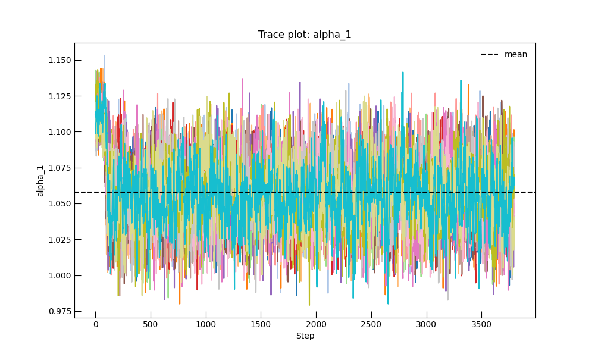
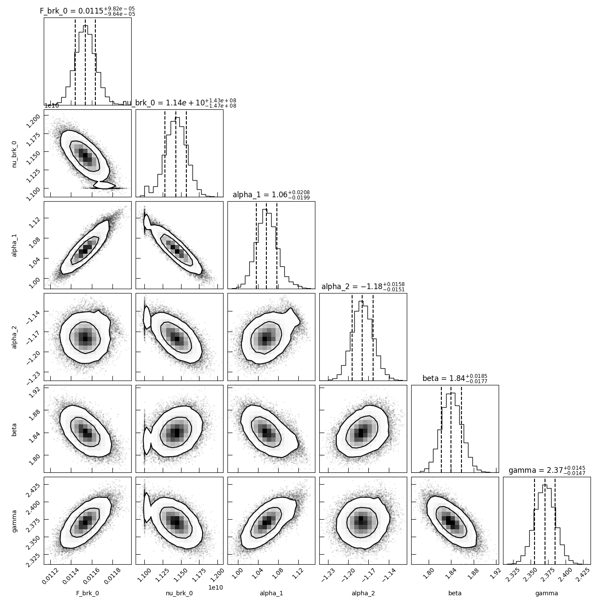

Note
Go to the end to download the full example code.
Fitting a Time-Evolving Synchrotron SED#
This example demonstrates a complete end-to-end inference workflow in Triceratops:
Loading radio photometry data using the
RadioPhotometryContainer, including some special configurations for analysis.Use an evolving SED model from
models.SEDsto model the radio emission.Running MCMC with
EmceeSampler.Visualizing posterior predictive spectra.
We model the dataset using a PL_Evolving_SSA_SED_Model,
which describes a broken power-law spectrum whose break frequency and amplitude
evolve in time.
import matplotlib.pyplot as plt
import numpy as np
from astropy import units as u
from astropy.time import Time
from triceratops.data.photometry import RadioPhotometryContainer
from triceratops.inference import GaussianCensoredLikelihood, InferenceProblem
from triceratops.inference.sampling import EmceeSampler
from triceratops.models.SEDs import PL_Evolving_SSA_SED_Model
from triceratops.utils.plot_utils import set_plot_style
set_plot_style()
np.random.seed(42)
Loading and Inspecting the Data#
We begin by loading a synthetic radio photometry dataset bundled with the documentation. The file is nearly in the correct format for direct ingestion, but requires two small adjustments:
The column
time_midobsis remapped to the canonical nametime.The times in the file are absolute (Julian Date), so we convert them to relative time measured from a physically meaningful reference epoch.
For AT2018COW, from which this dataset was randomly generated,
we adopt the optical peak time reported in the literature
as the reference epoch. Internally, the
RadioPhotometryContainer
converts all times to relative days since the reference epoch, which is
the canonical time representation used throughout the modeling and
inference pipelines.
The resulting object is a validated, immutable data container that enforces schema consistency, unit correctness, and detection/upper-limit bookkeeping.
Note
A more detailed discussion of the various options for loading data can be found
in the documentation for RadioPhotometryContainer.
# Set the data file.
data_file = "../../../../../docs/source/_data/example_photometry.fits"
# Set the peak time from the literature.
optical_peak_time = Time(58284.3, format="mjd", scale="utc")
photometry_data = RadioPhotometryContainer.from_file(
data_file,
column_map={"time_midobs": "time"},
time_starts=optical_peak_time.jd1 * u.day,
internal_time_scale="utc",
internal_time_format="jd",
)
print(f"Loaded {photometry_data.n_obs} observations.")
# Group observations separated by more than 3 days into distinct epochs
photometry_data.set_epochs_from_time_gaps(max_gap=3.0 * u.day)
Loaded 62 observations.
The photometry container includes a built-in plotting routine that automatically handles detections and upper limits.

Constructing the Model and Likelihood#
For this example, we’ll use the PL_Evolving_SSA_SED_Model, which describes provides
a phenomenological description of generic synchrotron SEDs from time evolving transients. Generically, we
assume that each epoch has an SED described by a smooth broken power-law with fixed slopes \(\alpha_1\)
and \(\alpha_2\) below and above a break frequency \(\nu_{\rm brk}(t)\), respectively.
The break frequency evolves in time as
where \(\nu_{\rm brk,0}\) is the break frequency at a reference time \(t_0\) and \(\beta\) is the power-law index describing the temporal evolution of the break frequency. The flux density at the break also evolves in time as
where \(F_{\rm brk,0}\) is the flux density at the break at the reference time and \(\gamma\) is the power-law index describing the temporal evolution of the break flux density. The parameter \(s\) controls the smoothness of the break, and is fixed to a value of 0.5 for this analysis. The reference time \(t_0\) is fixed to 100 days, which is a reasonable timescale for the evolution of the SED in this dataset. The model is implemented in physical units, so all parameters have associated units that are automatically handled throughout the inference process.
More detailed information can be found in the API documentation for
PL_Evolving_SSA_SED_Model.
# Generate the model object.
model = PL_Evolving_SSA_SED_Model()
# Convert the photometry data to the format required for inference. This standardizes
# the data so that it is more easily ingested by the likelihood and model, and also ensures that all units are
# properly handled and consistent with the model's base units.
inference_data = photometry_data.to_inference_data(model=model)
# Construct the likelihood, which automatically handles detections and upper limits.
likelihood = GaussianCensoredLikelihood(
model=model,
data=inference_data,
)
# Finally, we construct the inference problem by combining the likelihood with the model and data.
problem = InferenceProblem(likelihood=likelihood)
Defining Priors#
We assign broad uniform priors to the spectral parameters. Units are automatically handled and coerced into model base units.
problem.set_prior("F_brk_0", "uniform", lower=1e-3 * u.mJy, upper=1e3 * u.mJy)
problem.set_prior("nu_brk_0", "uniform", lower=0.01 * u.GHz, upper=50 * u.GHz)
problem.set_prior("alpha_1", "uniform", lower=0.0, upper=5.0)
problem.set_prior("alpha_2", "uniform", lower=-5.0, upper=0.0)
problem.set_prior("beta", "uniform", lower=-5.0, upper=5.0)
problem.set_prior("gamma", "uniform", lower=-5.0, upper=5.0)
# Fix nuisance parameters
problem.parameters["s"].initial_value = 0.5
problem.parameters["s"].freeze = True
problem.parameters["t_0"].initial_value = (100 * u.day).to(u.s)
problem.parameters["t_0"].freeze = True
# Set reasonable initial values for the free parameters to help with MCMC convergence.
problem.parameters["F_brk_0"].initial_value = 0.01 # Jy
problem.parameters["nu_brk_0"].initial_value = 1.1e10 # Hz
problem.parameters["alpha_1"].initial_value = 1
problem.parameters["alpha_2"].initial_value = -1.0
problem.parameters["beta"].initial_value = 2
problem.parameters["gamma"].initial_value = 1
Running MCMC#
We now sample the posterior using an ensemble sampler.
sampler = EmceeSampler(problem, n_walkers=16)
result = sampler.run(20_000, progress=True)
samples = result.get_flat_samples(burn=4000, thin=10)
0% | | 🦖 0/20000 [00:00<?, ?it/s]
0% | | 🦖 26/20000 [00:00<01:19, 250.73it/s]
0% | | 🦖 52/20000 [00:00<01:19, 251.42it/s]
0% | | 🦖 78/20000 [00:00<01:19, 251.41it/s]
1% | | 🦖 104/20000 [00:00<01:19, 251.21it/s]
1% | | 🦖 130/20000 [00:00<01:18, 251.81it/s]
1% | | 🦖 156/20000 [00:00<01:18, 252.14it/s]
1% | | 🦖 182/20000 [00:00<01:18, 252.32it/s]
1% | | 🦖 208/20000 [00:00<01:18, 252.59it/s]
1% | | 🦖 234/20000 [00:00<01:18, 252.69it/s]
1% |▏ | 🦖 260/20000 [00:01<01:18, 252.97it/s]
1% |▏ | 🦖 286/20000 [00:01<01:17, 252.89it/s]
2% |▏ | 🦖 312/20000 [00:01<01:17, 252.61it/s]
2% |▏ | 🦖 338/20000 [00:01<01:17, 252.49it/s]
2% |▏ | 🦖 364/20000 [00:01<01:18, 251.57it/s]
2% |▏ | 🦖 390/20000 [00:01<01:17, 251.71it/s]
2% |▏ | 🦖 416/20000 [00:01<01:17, 251.76it/s]
2% |▏ | 🦖 442/20000 [00:01<01:17, 251.73it/s]
2% |▏ | 🦖 468/20000 [00:01<01:17, 252.14it/s]
2% |▏ | 🦖 494/20000 [00:01<01:17, 252.38it/s]
3% |▎ | 🦖 520/20000 [00:02<01:17, 252.41it/s]
3% |▎ | 🦖 546/20000 [00:02<01:17, 252.11it/s]
3% |▎ | 🦖 572/20000 [00:02<01:16, 252.41it/s]
3% |▎ | 🦖 598/20000 [00:02<01:16, 252.37it/s]
3% |▎ | 🦖 624/20000 [00:02<01:16, 252.20it/s]
3% |▎ | 🦖 650/20000 [00:02<01:16, 252.09it/s]
3% |▎ | 🦖 676/20000 [00:02<01:16, 252.33it/s]
4% |▎ | 🦖 702/20000 [00:02<01:16, 250.68it/s]
4% |▎ | 🦖 728/20000 [00:02<01:17, 247.64it/s]
4% |▍ | 🦖 754/20000 [00:02<01:17, 249.73it/s]
4% |▍ | 🦖 780/20000 [00:03<01:16, 250.90it/s]
4% |▍ | 🦖 806/20000 [00:03<01:16, 250.41it/s]
4% |▍ | 🦖 832/20000 [00:03<01:16, 251.20it/s]
4% |▍ | 🦖 858/20000 [00:03<01:16, 251.23it/s]
4% |▍ | 🦖 884/20000 [00:03<01:15, 252.31it/s]
5% |▍ | 🦖 910/20000 [00:03<01:15, 252.87it/s]
5% |▍ | 🦖 936/20000 [00:03<01:15, 253.04it/s]
5% |▍ | 🦖 962/20000 [00:03<01:15, 253.13it/s]
5% |▍ | 🦖 988/20000 [00:03<01:15, 253.12it/s]
5% |▌ | 🦖 1014/20000 [00:04<01:14, 253.40it/s]
5% |▌ | 🦖 1040/20000 [00:04<01:14, 253.27it/s]
5% |▌ | 🦖 1066/20000 [00:04<01:15, 252.11it/s]
5% |▌ | 🦖 1092/20000 [00:04<01:15, 251.95it/s]
6% |▌ | 🦖 1118/20000 [00:04<01:14, 252.00it/s]
6% |▌ | 🦖 1144/20000 [00:04<01:14, 252.01it/s]
6% |▌ | 🦖 1170/20000 [00:04<01:14, 252.40it/s]
6% |▌ | 🦖 1196/20000 [00:04<01:14, 252.44it/s]
6% |▌ | 🦖 1222/20000 [00:04<01:14, 252.62it/s]
6% |▌ | 🦖 1248/20000 [00:04<01:14, 252.78it/s]
6% |▋ | 🦖 1274/20000 [00:05<01:13, 253.36it/s]
6% |▋ | 🦖 1300/20000 [00:05<01:13, 253.51it/s]
7% |▋ | 🦖 1326/20000 [00:05<01:13, 253.91it/s]
7% |▋ | 🦖 1352/20000 [00:05<01:13, 253.30it/s]
7% |▋ | 🦖 1378/20000 [00:05<01:13, 253.13it/s]
7% |▋ | 🦖 1404/20000 [00:05<01:13, 253.41it/s]
7% |▋ | 🦖 1430/20000 [00:05<01:13, 253.16it/s]
7% |▋ | 🦖 1456/20000 [00:05<01:13, 252.90it/s]
7% |▋ | 🦖 1482/20000 [00:05<01:13, 253.18it/s]
8% |▊ | 🦖 1508/20000 [00:05<01:13, 253.09it/s]
8% |▊ | 🦖 1534/20000 [00:06<01:13, 251.83it/s]
8% |▊ | 🦖 1560/20000 [00:06<01:13, 251.63it/s]
8% |▊ | 🦖 1586/20000 [00:06<01:13, 251.48it/s]
8% |▊ | 🦖 1612/20000 [00:06<01:13, 251.44it/s]
8% |▊ | 🦖 1638/20000 [00:06<01:12, 251.61it/s]
8% |▊ | 🦖 1664/20000 [00:06<01:12, 251.78it/s]
8% |▊ | 🦖 1690/20000 [00:06<01:12, 251.96it/s]
9% |▊ | 🦖 1716/20000 [00:06<01:12, 252.09it/s]
9% |▊ | 🦖 1742/20000 [00:06<01:12, 252.37it/s]
9% |▉ | 🦖 1768/20000 [00:07<01:12, 252.70it/s]
9% |▉ | 🦖 1794/20000 [00:07<01:12, 252.69it/s]
9% |▉ | 🦖 1820/20000 [00:07<01:11, 252.68it/s]
9% |▉ | 🦖 1846/20000 [00:07<01:11, 252.76it/s]
9% |▉ | 🦖 1872/20000 [00:07<01:11, 252.65it/s]
9% |▉ | 🦖 1898/20000 [00:07<01:11, 252.60it/s]
10% |▉ | 🦖 1924/20000 [00:07<01:11, 252.43it/s]
10% |▉ | 🦖 1950/20000 [00:07<01:11, 252.45it/s]
10% |▉ | 🦖 1976/20000 [00:07<01:12, 248.87it/s]
10% |█ | 🦖 2001/20000 [00:07<01:12, 246.73it/s]
10% |█ | 🦖 2027/20000 [00:08<01:12, 248.74it/s]
10% |█ | 🦖 2053/20000 [00:08<01:11, 249.70it/s]
10% |█ | 🦖 2079/20000 [00:08<01:11, 250.59it/s]
11% |█ | 🦖 2105/20000 [00:08<01:11, 251.00it/s]
11% |█ | 🦖 2131/20000 [00:08<01:11, 250.58it/s]
11% |█ | 🦖 2157/20000 [00:08<01:11, 250.70it/s]
11% |█ | 🦖 2183/20000 [00:08<01:11, 250.93it/s]
11% |█ | 🦖 2209/20000 [00:08<01:10, 250.59it/s]
11% |█ | 🦖 2235/20000 [00:08<01:11, 248.79it/s]
11% |█▏ | 🦖 2261/20000 [00:08<01:11, 249.45it/s]
11% |█▏ | 🦖 2287/20000 [00:09<01:10, 250.60it/s]
12% |█▏ | 🦖 2313/20000 [00:09<01:10, 249.94it/s]
12% |█▏ | 🦖 2339/20000 [00:09<01:10, 250.68it/s]
12% |█▏ | 🦖 2365/20000 [00:09<01:10, 251.13it/s]
12% |█▏ | 🦖 2391/20000 [00:09<01:10, 251.24it/s]
12% |█▏ | 🦖 2417/20000 [00:09<01:09, 251.78it/s]
12% |█▏ | 🦖 2443/20000 [00:09<01:09, 251.98it/s]
12% |█▏ | 🦖 2469/20000 [00:09<01:09, 251.82it/s]
12% |█▏ | 🦖 2495/20000 [00:09<01:09, 251.13it/s]
13% |█▎ | 🦖 2521/20000 [00:10<01:09, 251.50it/s]
13% |█▎ | 🦖 2547/20000 [00:10<01:09, 251.20it/s]
13% |█▎ | 🦖 2573/20000 [00:10<01:09, 251.46it/s]
13% |█▎ | 🦖 2599/20000 [00:10<01:09, 251.86it/s]
13% |█▎ | 🦖 2625/20000 [00:10<01:08, 252.19it/s]
13% |█▎ | 🦖 2651/20000 [00:10<01:08, 252.78it/s]
13% |█▎ | 🦖 2677/20000 [00:10<01:08, 252.91it/s]
14% |█▎ | 🦖 2703/20000 [00:10<01:08, 252.60it/s]
14% |█▎ | 🦖 2729/20000 [00:10<01:08, 252.32it/s]
14% |█▍ | 🦖 2755/20000 [00:10<01:08, 252.01it/s]
14% |█▍ | 🦖 2781/20000 [00:11<01:08, 252.30it/s]
14% |█▍ | 🦖 2807/20000 [00:11<01:08, 252.19it/s]
14% |█▍ | 🦖 2833/20000 [00:11<01:08, 252.30it/s]
14% |█▍ | 🦖 2859/20000 [00:11<01:07, 252.41it/s]
14% |█▍ | 🦖 2885/20000 [00:11<01:07, 253.05it/s]
15% |█▍ | 🦖 2911/20000 [00:11<01:07, 253.45it/s]
15% |█▍ | 🦖 2937/20000 [00:11<01:07, 253.51it/s]
15% |█▍ | 🦖 2963/20000 [00:11<01:07, 253.00it/s]
15% |█▍ | 🦖 2989/20000 [00:11<01:07, 253.37it/s]
15% |█▌ | 🦖 3015/20000 [00:11<01:06, 253.51it/s]
15% |█▌ | 🦖 3041/20000 [00:12<01:06, 253.92it/s]
15% |█▌ | 🦖 3067/20000 [00:12<01:06, 254.25it/s]
15% |█▌ | 🦖 3093/20000 [00:12<01:06, 254.21it/s]
16% |█▌ | 🦖 3119/20000 [00:12<01:06, 253.46it/s]
16% |█▌ | 🦖 3145/20000 [00:12<01:06, 252.83it/s]
16% |█▌ | 🦖 3171/20000 [00:12<01:06, 252.73it/s]
16% |█▌ | 🦖 3197/20000 [00:12<01:06, 252.42it/s]
16% |█▌ | 🦖 3223/20000 [00:12<01:06, 253.14it/s]
16% |█▌ | 🦖 3249/20000 [00:12<01:06, 253.70it/s]
16% |█▋ | 🦖 3275/20000 [00:12<01:06, 252.71it/s]
17% |█▋ | 🦖 3301/20000 [00:13<01:05, 253.06it/s]
17% |█▋ | 🦖 3327/20000 [00:13<01:05, 252.74it/s]
17% |█▋ | 🦖 3353/20000 [00:13<01:05, 253.17it/s]
17% |█▋ | 🦖 3379/20000 [00:13<01:05, 253.10it/s]
17% |█▋ | 🦖 3405/20000 [00:13<01:05, 252.51it/s]
17% |█▋ | 🦖 3431/20000 [00:13<01:05, 252.49it/s]
17% |█▋ | 🦖 3457/20000 [00:13<01:05, 252.62it/s]
17% |█▋ | 🦖 3483/20000 [00:13<01:05, 252.67it/s]
18% |█▊ | 🦖 3509/20000 [00:13<01:05, 252.45it/s]
18% |█▊ | 🦖 3535/20000 [00:14<01:05, 252.52it/s]
18% |█▊ | 🦖 3561/20000 [00:14<01:05, 252.73it/s]
18% |█▊ | 🦖 3587/20000 [00:14<01:04, 252.55it/s]
18% |█▊ | 🦖 3613/20000 [00:14<01:04, 252.92it/s]
18% |█▊ | 🦖 3639/20000 [00:14<01:04, 252.84it/s]
18% |█▊ | 🦖 3665/20000 [00:14<01:04, 252.85it/s]
18% |█▊ | 🦖 3691/20000 [00:14<01:04, 253.28it/s]
19% |█▊ | 🦖 3717/20000 [00:14<01:04, 253.48it/s]
19% |█▊ | 🦖 3743/20000 [00:14<01:04, 252.79it/s]
19% |█▉ | 🦖 3769/20000 [00:14<01:04, 253.36it/s]
19% |█▉ | 🦖 3795/20000 [00:15<01:03, 253.25it/s]
19% |█▉ | 🦖 3821/20000 [00:15<01:03, 253.23it/s]
19% |█▉ | 🦖 3847/20000 [00:15<01:03, 253.35it/s]
19% |█▉ | 🦖 3873/20000 [00:15<01:03, 252.90it/s]
19% |█▉ | 🦖 3899/20000 [00:15<01:03, 252.59it/s]
20% |█▉ | 🦖 3925/20000 [00:15<01:03, 252.36it/s]
20% |█▉ | 🦖 3951/20000 [00:15<01:03, 252.21it/s]
20% |█▉ | 🦖 3977/20000 [00:15<01:03, 251.91it/s]
20% |██ | 🦖 4003/20000 [00:15<01:03, 252.08it/s]
20% |██ | 🦖 4029/20000 [00:15<01:03, 252.24it/s]
20% |██ | 🦖 4055/20000 [00:16<01:03, 252.24it/s]
20% |██ | 🦖 4081/20000 [00:16<01:03, 252.45it/s]
21% |██ | 🦖 4107/20000 [00:16<01:02, 252.66it/s]
21% |██ | 🦖 4133/20000 [00:16<01:02, 253.15it/s]
21% |██ | 🦖 4159/20000 [00:16<01:02, 253.26it/s]
21% |██ | 🦖 4185/20000 [00:16<01:02, 253.18it/s]
21% |██ | 🦖 4211/20000 [00:16<01:02, 253.06it/s]
21% |██ | 🦖 4237/20000 [00:16<01:02, 252.69it/s]
21% |██▏ | 🦖 4263/20000 [00:16<01:02, 253.08it/s]
21% |██▏ | 🦖 4289/20000 [00:17<01:02, 253.11it/s]
22% |██▏ | 🦖 4315/20000 [00:17<01:01, 253.19it/s]
22% |██▏ | 🦖 4341/20000 [00:17<01:02, 252.42it/s]
22% |██▏ | 🦖 4367/20000 [00:17<01:01, 252.92it/s]
22% |██▏ | 🦖 4393/20000 [00:17<01:01, 252.47it/s]
22% |██▏ | 🦖 4419/20000 [00:17<01:01, 252.53it/s]
22% |██▏ | 🦖 4445/20000 [00:17<01:01, 252.89it/s]
22% |██▏ | 🦖 4471/20000 [00:17<01:01, 253.30it/s]
22% |██▏ | 🦖 4497/20000 [00:17<01:01, 253.68it/s]
23% |██▎ | 🦖 4523/20000 [00:17<01:00, 253.79it/s]
23% |██▎ | 🦖 4549/20000 [00:18<01:00, 254.04it/s]
23% |██▎ | 🦖 4575/20000 [00:18<01:00, 253.93it/s]
23% |██▎ | 🦖 4601/20000 [00:18<01:00, 253.98it/s]
23% |██▎ | 🦖 4627/20000 [00:18<01:00, 253.84it/s]
23% |██▎ | 🦖 4653/20000 [00:18<01:00, 253.44it/s]
23% |██▎ | 🦖 4679/20000 [00:18<01:00, 253.34it/s]
24% |██▎ | 🦖 4705/20000 [00:18<01:00, 253.53it/s]
24% |██▎ | 🦖 4731/20000 [00:18<01:00, 253.15it/s]
24% |██▍ | 🦖 4757/20000 [00:18<01:00, 252.90it/s]
24% |██▍ | 🦖 4783/20000 [00:18<01:00, 252.49it/s]
24% |██▍ | 🦖 4809/20000 [00:19<01:00, 252.07it/s]
24% |██▍ | 🦖 4835/20000 [00:19<01:00, 249.43it/s]
24% |██▍ | 🦖 4861/20000 [00:19<01:00, 250.20it/s]
24% |██▍ | 🦖 4887/20000 [00:19<01:00, 250.77it/s]
25% |██▍ | 🦖 4913/20000 [00:19<01:00, 250.91it/s]
25% |██▍ | 🦖 4939/20000 [00:19<00:59, 251.61it/s]
25% |██▍ | 🦖 4965/20000 [00:19<00:59, 251.84it/s]
25% |██▍ | 🦖 4991/20000 [00:19<00:59, 252.25it/s]
25% |██▌ | 🦖 5017/20000 [00:19<00:59, 251.47it/s]
25% |██▌ | 🦖 5043/20000 [00:19<00:59, 250.00it/s]
25% |██▌ | 🦖 5069/20000 [00:20<00:59, 251.03it/s]
25% |██▌ | 🦖 5095/20000 [00:20<00:59, 251.83it/s]
26% |██▌ | 🦖 5121/20000 [00:20<00:59, 252.06it/s]
26% |██▌ | 🦖 5147/20000 [00:20<00:58, 252.06it/s]
26% |██▌ | 🦖 5173/20000 [00:20<00:58, 252.18it/s]
26% |██▌ | 🦖 5199/20000 [00:20<00:58, 252.76it/s]
26% |██▌ | 🦖 5225/20000 [00:20<00:58, 252.65it/s]
26% |██▋ | 🦖 5251/20000 [00:20<00:58, 252.10it/s]
26% |██▋ | 🦖 5277/20000 [00:20<00:58, 252.31it/s]
27% |██▋ | 🦖 5303/20000 [00:21<00:58, 252.48it/s]
27% |██▋ | 🦖 5329/20000 [00:21<00:58, 252.84it/s]
27% |██▋ | 🦖 5355/20000 [00:21<00:57, 253.40it/s]
27% |██▋ | 🦖 5381/20000 [00:21<00:57, 253.68it/s]
27% |██▋ | 🦖 5407/20000 [00:21<00:57, 252.80it/s]
27% |██▋ | 🦖 5433/20000 [00:21<00:57, 253.34it/s]
27% |██▋ | 🦖 5459/20000 [00:21<00:57, 253.36it/s]
27% |██▋ | 🦖 5485/20000 [00:21<00:57, 253.56it/s]
28% |██▊ | 🦖 5511/20000 [00:21<00:57, 253.38it/s]
28% |██▊ | 🦖 5537/20000 [00:21<00:57, 253.43it/s]
28% |██▊ | 🦖 5563/20000 [00:22<00:56, 253.67it/s]
28% |██▊ | 🦖 5589/20000 [00:22<00:56, 253.82it/s]
28% |██▊ | 🦖 5615/20000 [00:22<00:56, 253.86it/s]
28% |██▊ | 🦖 5641/20000 [00:22<00:56, 253.87it/s]
28% |██▊ | 🦖 5667/20000 [00:22<00:56, 253.50it/s]
28% |██▊ | 🦖 5693/20000 [00:22<00:56, 253.06it/s]
29% |██▊ | 🦖 5719/20000 [00:22<00:56, 253.29it/s]
29% |██▊ | 🦖 5745/20000 [00:22<00:56, 252.99it/s]
29% |██▉ | 🦖 5771/20000 [00:22<00:56, 253.92it/s]
29% |██▉ | 🦖 5797/20000 [00:22<00:55, 253.96it/s]
29% |██▉ | 🦖 5823/20000 [00:23<00:55, 253.83it/s]
29% |██▉ | 🦖 5849/20000 [00:23<00:55, 253.25it/s]
29% |██▉ | 🦖 5875/20000 [00:23<00:55, 253.24it/s]
30% |██▉ | 🦖 5901/20000 [00:23<00:55, 253.32it/s]
30% |██▉ | 🦖 5927/20000 [00:23<00:55, 253.00it/s]
30% |██▉ | 🦖 5953/20000 [00:23<00:55, 252.85it/s]
30% |██▉ | 🦖 5979/20000 [00:23<00:55, 253.15it/s]
30% |███ | 🦖 6005/20000 [00:23<00:55, 253.50it/s]
30% |███ | 🦖 6031/20000 [00:23<00:55, 253.51it/s]
30% |███ | 🦖 6057/20000 [00:23<00:54, 253.99it/s]
30% |███ | 🦖 6083/20000 [00:24<00:54, 254.05it/s]
31% |███ | 🦖 6109/20000 [00:24<00:54, 253.80it/s]
31% |███ | 🦖 6135/20000 [00:24<00:54, 252.44it/s]
31% |███ | 🦖 6161/20000 [00:24<00:54, 252.49it/s]
31% |███ | 🦖 6187/20000 [00:24<00:54, 252.70it/s]
31% |███ | 🦖 6213/20000 [00:24<00:54, 253.19it/s]
31% |███ | 🦖 6239/20000 [00:24<00:54, 253.06it/s]
31% |███▏ | 🦖 6265/20000 [00:24<00:54, 253.36it/s]
31% |███▏ | 🦖 6291/20000 [00:24<00:54, 253.44it/s]
32% |███▏ | 🦖 6317/20000 [00:25<00:54, 252.99it/s]
32% |███▏ | 🦖 6343/20000 [00:25<00:54, 250.45it/s]
32% |███▏ | 🦖 6369/20000 [00:25<00:54, 251.04it/s]
32% |███▏ | 🦖 6395/20000 [00:25<00:53, 251.96it/s]
32% |███▏ | 🦖 6421/20000 [00:25<00:53, 252.04it/s]
32% |███▏ | 🦖 6447/20000 [00:25<00:53, 252.21it/s]
32% |███▏ | 🦖 6473/20000 [00:25<00:53, 252.29it/s]
32% |███▏ | 🦖 6499/20000 [00:25<00:53, 252.48it/s]
33% |███▎ | 🦖 6525/20000 [00:25<00:53, 252.96it/s]
33% |███▎ | 🦖 6551/20000 [00:25<00:53, 253.25it/s]
33% |███▎ | 🦖 6577/20000 [00:26<00:53, 250.82it/s]
33% |███▎ | 🦖 6603/20000 [00:26<00:53, 251.66it/s]
33% |███▎ | 🦖 6629/20000 [00:26<00:53, 252.07it/s]
33% |███▎ | 🦖 6655/20000 [00:26<00:52, 252.04it/s]
33% |███▎ | 🦖 6681/20000 [00:26<00:52, 252.11it/s]
34% |███▎ | 🦖 6707/20000 [00:26<00:52, 252.17it/s]
34% |███▎ | 🦖 6733/20000 [00:26<00:52, 252.39it/s]
34% |███▍ | 🦖 6759/20000 [00:26<00:52, 252.21it/s]
34% |███▍ | 🦖 6785/20000 [00:26<00:52, 252.53it/s]
34% |███▍ | 🦖 6811/20000 [00:26<00:52, 252.95it/s]
34% |███▍ | 🦖 6837/20000 [00:27<00:52, 252.85it/s]
34% |███▍ | 🦖 6863/20000 [00:27<00:51, 253.15it/s]
34% |███▍ | 🦖 6889/20000 [00:27<00:51, 253.31it/s]
35% |███▍ | 🦖 6915/20000 [00:27<00:51, 253.43it/s]
35% |███▍ | 🦖 6941/20000 [00:27<00:51, 252.80it/s]
35% |███▍ | 🦖 6967/20000 [00:27<00:51, 253.05it/s]
35% |███▍ | 🦖 6993/20000 [00:27<00:51, 252.72it/s]
35% |███▌ | 🦖 7019/20000 [00:27<00:51, 252.60it/s]
35% |███▌ | 🦖 7045/20000 [00:27<00:51, 252.73it/s]
35% |███▌ | 🦖 7071/20000 [00:28<00:51, 253.08it/s]
35% |███▌ | 🦖 7097/20000 [00:28<00:50, 253.33it/s]
36% |███▌ | 🦖 7123/20000 [00:28<00:50, 253.56it/s]
36% |███▌ | 🦖 7149/20000 [00:28<00:50, 253.65it/s]
36% |███▌ | 🦖 7175/20000 [00:28<00:50, 253.62it/s]
36% |███▌ | 🦖 7201/20000 [00:28<00:50, 253.81it/s]
36% |███▌ | 🦖 7227/20000 [00:28<00:50, 253.37it/s]
36% |███▋ | 🦖 7253/20000 [00:28<00:50, 253.39it/s]
36% |███▋ | 🦖 7279/20000 [00:28<00:50, 253.73it/s]
37% |███▋ | 🦖 7305/20000 [00:28<00:50, 253.64it/s]
37% |███▋ | 🦖 7331/20000 [00:29<00:49, 253.92it/s]
37% |███▋ | 🦖 7357/20000 [00:29<00:49, 254.18it/s]
37% |███▋ | 🦖 7383/20000 [00:29<00:49, 254.16it/s]
37% |███▋ | 🦖 7409/20000 [00:29<00:50, 251.44it/s]
37% |███▋ | 🦖 7435/20000 [00:29<00:49, 252.16it/s]
37% |███▋ | 🦖 7461/20000 [00:29<00:49, 252.86it/s]
37% |███▋ | 🦖 7487/20000 [00:29<00:49, 253.47it/s]
38% |███▊ | 🦖 7513/20000 [00:29<00:49, 253.82it/s]
38% |███▊ | 🦖 7539/20000 [00:29<00:49, 254.07it/s]
38% |███▊ | 🦖 7565/20000 [00:29<00:48, 254.14it/s]
38% |███▊ | 🦖 7591/20000 [00:30<00:48, 254.38it/s]
38% |███▊ | 🦖 7617/20000 [00:30<00:48, 254.72it/s]
38% |███▊ | 🦖 7643/20000 [00:30<00:48, 254.66it/s]
38% |███▊ | 🦖 7669/20000 [00:30<00:48, 253.95it/s]
38% |███▊ | 🦖 7695/20000 [00:30<00:48, 253.80it/s]
39% |███▊ | 🦖 7721/20000 [00:30<00:48, 253.97it/s]
39% |███▊ | 🦖 7747/20000 [00:30<00:48, 254.42it/s]
39% |███▉ | 🦖 7773/20000 [00:30<00:48, 254.38it/s]
39% |███▉ | 🦖 7799/20000 [00:30<00:47, 254.56it/s]
39% |███▉ | 🦖 7825/20000 [00:30<00:47, 254.49it/s]
39% |███▉ | 🦖 7851/20000 [00:31<00:47, 254.35it/s]
39% |███▉ | 🦖 7877/20000 [00:31<00:47, 254.51it/s]
40% |███▉ | 🦖 7903/20000 [00:31<00:47, 255.00it/s]
40% |███▉ | 🦖 7929/20000 [00:31<00:47, 254.79it/s]
40% |███▉ | 🦖 7955/20000 [00:31<00:47, 254.61it/s]
40% |███▉ | 🦖 7981/20000 [00:31<00:47, 254.84it/s]
40% |████ | 🦖 8007/20000 [00:31<00:47, 254.98it/s]
40% |████ | 🦖 8033/20000 [00:31<00:46, 255.29it/s]
40% |████ | 🦖 8059/20000 [00:31<00:46, 255.32it/s]
40% |████ | 🦖 8085/20000 [00:32<00:46, 255.42it/s]
41% |████ | 🦖 8111/20000 [00:32<00:46, 255.24it/s]
41% |████ | 🦖 8137/20000 [00:32<00:46, 255.16it/s]
41% |████ | 🦖 8163/20000 [00:32<00:46, 254.98it/s]
41% |████ | 🦖 8189/20000 [00:32<00:46, 255.06it/s]
41% |████ | 🦖 8215/20000 [00:32<00:46, 254.82it/s]
41% |████ | 🦖 8241/20000 [00:32<00:46, 254.71it/s]
41% |████▏ | 🦖 8267/20000 [00:32<00:46, 254.60it/s]
41% |████▏ | 🦖 8293/20000 [00:32<00:45, 254.81it/s]
42% |████▏ | 🦖 8319/20000 [00:32<00:46, 253.30it/s]
42% |████▏ | 🦖 8345/20000 [00:33<00:46, 253.21it/s]
42% |████▏ | 🦖 8371/20000 [00:33<00:45, 253.19it/s]
42% |████▏ | 🦖 8397/20000 [00:33<00:45, 252.65it/s]
42% |████▏ | 🦖 8423/20000 [00:33<00:45, 253.12it/s]
42% |████▏ | 🦖 8449/20000 [00:33<00:45, 252.68it/s]
42% |████▏ | 🦖 8475/20000 [00:33<00:45, 253.01it/s]
43% |████▎ | 🦖 8501/20000 [00:33<00:45, 253.54it/s]
43% |████▎ | 🦖 8527/20000 [00:33<00:45, 254.25it/s]
43% |████▎ | 🦖 8553/20000 [00:33<00:44, 254.72it/s]
43% |████▎ | 🦖 8579/20000 [00:33<00:44, 254.70it/s]
43% |████▎ | 🦖 8605/20000 [00:34<00:44, 254.74it/s]
43% |████▎ | 🦖 8631/20000 [00:34<00:44, 254.47it/s]
43% |████▎ | 🦖 8657/20000 [00:34<00:44, 253.92it/s]
43% |████▎ | 🦖 8683/20000 [00:34<00:44, 253.13it/s]
44% |████▎ | 🦖 8709/20000 [00:34<00:44, 252.71it/s]
44% |████▎ | 🦖 8735/20000 [00:34<00:44, 252.58it/s]
44% |████▍ | 🦖 8761/20000 [00:34<00:44, 253.09it/s]
44% |████▍ | 🦖 8787/20000 [00:34<00:44, 252.90it/s]
44% |████▍ | 🦖 8813/20000 [00:34<00:44, 252.99it/s]
44% |████▍ | 🦖 8839/20000 [00:34<00:44, 252.83it/s]
44% |████▍ | 🦖 8865/20000 [00:35<00:44, 253.01it/s]
44% |████▍ | 🦖 8891/20000 [00:35<00:43, 253.38it/s]
45% |████▍ | 🦖 8917/20000 [00:35<00:43, 253.88it/s]
45% |████▍ | 🦖 8943/20000 [00:35<00:43, 254.22it/s]
45% |████▍ | 🦖 8969/20000 [00:35<00:43, 254.41it/s]
45% |████▍ | 🦖 8995/20000 [00:35<00:43, 254.51it/s]
45% |████▌ | 🦖 9021/20000 [00:35<00:43, 254.09it/s]
45% |████▌ | 🦖 9047/20000 [00:35<00:43, 254.13it/s]
45% |████▌ | 🦖 9073/20000 [00:35<00:42, 254.49it/s]
45% |████▌ | 🦖 9099/20000 [00:35<00:42, 254.46it/s]
46% |████▌ | 🦖 9125/20000 [00:36<00:42, 254.60it/s]
46% |████▌ | 🦖 9151/20000 [00:36<00:42, 254.65it/s]
46% |████▌ | 🦖 9177/20000 [00:36<00:42, 254.71it/s]
46% |████▌ | 🦖 9203/20000 [00:36<00:42, 254.48it/s]
46% |████▌ | 🦖 9229/20000 [00:36<00:42, 254.36it/s]
46% |████▋ | 🦖 9255/20000 [00:36<00:42, 254.13it/s]
46% |████▋ | 🦖 9281/20000 [00:36<00:42, 254.03it/s]
47% |████▋ | 🦖 9307/20000 [00:36<00:42, 253.96it/s]
47% |████▋ | 🦖 9333/20000 [00:36<00:41, 254.36it/s]
47% |████▋ | 🦖 9359/20000 [00:37<00:41, 254.50it/s]
47% |████▋ | 🦖 9385/20000 [00:37<00:41, 254.38it/s]
47% |████▋ | 🦖 9411/20000 [00:37<00:41, 254.44it/s]
47% |████▋ | 🦖 9437/20000 [00:37<00:41, 254.84it/s]
47% |████▋ | 🦖 9463/20000 [00:37<00:41, 254.74it/s]
47% |████▋ | 🦖 9489/20000 [00:37<00:41, 254.39it/s]
48% |████▊ | 🦖 9515/20000 [00:37<00:41, 254.22it/s]
48% |████▊ | 🦖 9541/20000 [00:37<00:41, 253.62it/s]
48% |████▊ | 🦖 9567/20000 [00:37<00:41, 253.35it/s]
48% |████▊ | 🦖 9593/20000 [00:37<00:41, 253.34it/s]
48% |████▊ | 🦖 9619/20000 [00:38<00:41, 253.07it/s]
48% |████▊ | 🦖 9645/20000 [00:38<00:40, 253.27it/s]
48% |████▊ | 🦖 9671/20000 [00:38<00:40, 253.05it/s]
48% |████▊ | 🦖 9697/20000 [00:38<00:40, 253.42it/s]
49% |████▊ | 🦖 9723/20000 [00:38<00:40, 253.25it/s]
49% |████▊ | 🦖 9749/20000 [00:38<00:40, 253.42it/s]
49% |████▉ | 🦖 9775/20000 [00:38<00:40, 254.23it/s]
49% |████▉ | 🦖 9801/20000 [00:38<00:40, 254.16it/s]
49% |████▉ | 🦖 9827/20000 [00:38<00:39, 254.35it/s]
49% |████▉ | 🦖 9853/20000 [00:38<00:39, 254.23it/s]
49% |████▉ | 🦖 9879/20000 [00:39<00:39, 254.95it/s]
50% |████▉ | 🦖 9905/20000 [00:39<00:39, 254.74it/s]
50% |████▉ | 🦖 9931/20000 [00:39<00:39, 254.20it/s]
50% |████▉ | 🦖 9957/20000 [00:39<00:39, 254.26it/s]
50% |████▉ | 🦖 9983/20000 [00:39<00:39, 254.02it/s]
50% |█████ | 🦖 10009/20000 [00:39<00:39, 252.14it/s]
50% |█████ | 🦖 10035/20000 [00:39<00:39, 252.97it/s]
50% |█████ | 🦖 10061/20000 [00:39<00:39, 253.22it/s]
50% |█████ | 🦖 10087/20000 [00:39<00:39, 253.53it/s]
51% |█████ | 🦖 10113/20000 [00:39<00:39, 252.58it/s]
51% |█████ | 🦖 10139/20000 [00:40<00:38, 253.01it/s]
51% |█████ | 🦖 10165/20000 [00:40<00:38, 252.44it/s]
51% |█████ | 🦖 10191/20000 [00:40<00:38, 253.19it/s]
51% |█████ | 🦖 10217/20000 [00:40<00:38, 253.69it/s]
51% |█████ | 🦖 10243/20000 [00:40<00:38, 253.47it/s]
51% |█████▏ | 🦖 10269/20000 [00:40<00:38, 253.90it/s]
51% |█████▏ | 🦖 10295/20000 [00:40<00:38, 254.04it/s]
52% |█████▏ | 🦖 10321/20000 [00:40<00:38, 254.08it/s]
52% |█████▏ | 🦖 10347/20000 [00:40<00:38, 253.99it/s]
52% |█████▏ | 🦖 10373/20000 [00:41<00:37, 254.22it/s]
52% |█████▏ | 🦖 10399/20000 [00:41<00:37, 254.50it/s]
52% |█████▏ | 🦖 10425/20000 [00:41<00:37, 254.87it/s]
52% |█████▏ | 🦖 10451/20000 [00:41<00:37, 255.14it/s]
52% |█████▏ | 🦖 10477/20000 [00:41<00:37, 254.65it/s]
53% |█████▎ | 🦖 10503/20000 [00:41<00:37, 254.14it/s]
53% |█████▎ | 🦖 10529/20000 [00:41<00:37, 253.87it/s]
53% |█████▎ | 🦖 10555/20000 [00:41<00:37, 254.05it/s]
53% |█████▎ | 🦖 10581/20000 [00:41<00:36, 254.86it/s]
53% |█████▎ | 🦖 10607/20000 [00:41<00:36, 255.29it/s]
53% |█████▎ | 🦖 10633/20000 [00:42<00:36, 255.76it/s]
53% |█████▎ | 🦖 10659/20000 [00:42<00:36, 255.44it/s]
53% |█████▎ | 🦖 10685/20000 [00:42<00:36, 255.40it/s]
54% |█████▎ | 🦖 10711/20000 [00:42<00:36, 255.81it/s]
54% |█████▎ | 🦖 10737/20000 [00:42<00:36, 255.47it/s]
54% |█████▍ | 🦖 10763/20000 [00:42<00:36, 255.51it/s]
54% |█████▍ | 🦖 10789/20000 [00:42<00:36, 255.47it/s]
54% |█████▍ | 🦖 10815/20000 [00:42<00:36, 254.96it/s]
54% |█████▍ | 🦖 10841/20000 [00:42<00:35, 255.11it/s]
54% |█████▍ | 🦖 10867/20000 [00:42<00:35, 254.92it/s]
54% |█████▍ | 🦖 10893/20000 [00:43<00:35, 255.05it/s]
55% |█████▍ | 🦖 10919/20000 [00:43<00:35, 254.63it/s]
55% |█████▍ | 🦖 10945/20000 [00:43<00:35, 255.08it/s]
55% |█████▍ | 🦖 10971/20000 [00:43<00:35, 255.16it/s]
55% |█████▍ | 🦖 10997/20000 [00:43<00:35, 254.88it/s]
55% |█████▌ | 🦖 11023/20000 [00:43<00:35, 254.92it/s]
55% |█████▌ | 🦖 11049/20000 [00:43<00:35, 255.18it/s]
55% |█████▌ | 🦖 11075/20000 [00:43<00:35, 254.29it/s]
56% |█████▌ | 🦖 11101/20000 [00:43<00:34, 254.78it/s]
56% |█████▌ | 🦖 11127/20000 [00:43<00:34, 254.35it/s]
56% |█████▌ | 🦖 11153/20000 [00:44<00:34, 254.83it/s]
56% |█████▌ | 🦖 11179/20000 [00:44<00:34, 254.42it/s]
56% |█████▌ | 🦖 11205/20000 [00:44<00:34, 254.66it/s]
56% |█████▌ | 🦖 11231/20000 [00:44<00:34, 254.60it/s]
56% |█████▋ | 🦖 11257/20000 [00:44<00:34, 254.46it/s]
56% |█████▋ | 🦖 11283/20000 [00:44<00:34, 255.14it/s]
57% |█████▋ | 🦖 11309/20000 [00:44<00:34, 254.97it/s]
57% |█████▋ | 🦖 11335/20000 [00:44<00:33, 254.90it/s]
57% |█████▋ | 🦖 11361/20000 [00:44<00:33, 254.84it/s]
57% |█████▋ | 🦖 11387/20000 [00:44<00:33, 254.14it/s]
57% |█████▋ | 🦖 11413/20000 [00:45<00:33, 254.29it/s]
57% |█████▋ | 🦖 11439/20000 [00:45<00:33, 253.21it/s]
57% |█████▋ | 🦖 11465/20000 [00:45<00:33, 253.72it/s]
57% |█████▋ | 🦖 11491/20000 [00:45<00:33, 253.90it/s]
58% |█████▊ | 🦖 11517/20000 [00:45<00:33, 253.58it/s]
58% |█████▊ | 🦖 11543/20000 [00:45<00:33, 253.98it/s]
58% |█████▊ | 🦖 11569/20000 [00:45<00:33, 253.76it/s]
58% |█████▊ | 🦖 11595/20000 [00:45<00:33, 254.33it/s]
58% |█████▊ | 🦖 11621/20000 [00:45<00:32, 254.35it/s]
58% |█████▊ | 🦖 11647/20000 [00:46<00:32, 254.02it/s]
58% |█████▊ | 🦖 11673/20000 [00:46<00:32, 253.78it/s]
58% |█████▊ | 🦖 11699/20000 [00:46<00:32, 254.30it/s]
59% |█████▊ | 🦖 11725/20000 [00:46<00:32, 254.57it/s]
59% |█████▉ | 🦖 11751/20000 [00:46<00:32, 254.66it/s]
59% |█████▉ | 🦖 11777/20000 [00:46<00:32, 254.31it/s]
59% |█████▉ | 🦖 11803/20000 [00:46<00:32, 254.21it/s]
59% |█████▉ | 🦖 11829/20000 [00:46<00:32, 254.17it/s]
59% |█████▉ | 🦖 11855/20000 [00:46<00:32, 253.91it/s]
59% |█████▉ | 🦖 11881/20000 [00:46<00:31, 254.15it/s]
60% |█████▉ | 🦖 11907/20000 [00:47<00:31, 254.32it/s]
60% |█████▉ | 🦖 11933/20000 [00:47<00:31, 254.60it/s]
60% |█████▉ | 🦖 11959/20000 [00:47<00:31, 255.19it/s]
60% |█████▉ | 🦖 11985/20000 [00:47<00:31, 255.01it/s]
60% |██████ | 🦖 12011/20000 [00:47<00:31, 254.82it/s]
60% |██████ | 🦖 12037/20000 [00:47<00:31, 254.61it/s]
60% |██████ | 🦖 12063/20000 [00:47<00:31, 254.49it/s]
60% |██████ | 🦖 12089/20000 [00:47<00:31, 254.03it/s]
61% |██████ | 🦖 12115/20000 [00:47<00:31, 252.93it/s]
61% |██████ | 🦖 12141/20000 [00:47<00:31, 253.43it/s]
61% |██████ | 🦖 12167/20000 [00:48<00:30, 253.61it/s]
61% |██████ | 🦖 12193/20000 [00:48<00:30, 253.56it/s]
61% |██████ | 🦖 12219/20000 [00:48<00:30, 253.69it/s]
61% |██████ | 🦖 12245/20000 [00:48<00:30, 253.83it/s]
61% |██████▏ | 🦖 12271/20000 [00:48<00:30, 253.79it/s]
61% |██████▏ | 🦖 12297/20000 [00:48<00:30, 253.94it/s]
62% |██████▏ | 🦖 12323/20000 [00:48<00:30, 254.05it/s]
62% |██████▏ | 🦖 12349/20000 [00:48<00:30, 254.11it/s]
62% |██████▏ | 🦖 12375/20000 [00:48<00:30, 254.00it/s]
62% |██████▏ | 🦖 12401/20000 [00:48<00:29, 253.71it/s]
62% |██████▏ | 🦖 12427/20000 [00:49<00:29, 253.66it/s]
62% |██████▏ | 🦖 12453/20000 [00:49<00:29, 252.99it/s]
62% |██████▏ | 🦖 12479/20000 [00:49<00:29, 253.58it/s]
63% |██████▎ | 🦖 12505/20000 [00:49<00:29, 253.73it/s]
63% |██████▎ | 🦖 12531/20000 [00:49<00:29, 253.70it/s]
63% |██████▎ | 🦖 12557/20000 [00:49<00:29, 253.86it/s]
63% |██████▎ | 🦖 12583/20000 [00:49<00:29, 253.77it/s]
63% |██████▎ | 🦖 12609/20000 [00:49<00:29, 253.90it/s]
63% |██████▎ | 🦖 12635/20000 [00:49<00:29, 251.40it/s]
63% |██████▎ | 🦖 12661/20000 [00:50<00:29, 252.35it/s]
63% |██████▎ | 🦖 12687/20000 [00:50<00:28, 252.94it/s]
64% |██████▎ | 🦖 12713/20000 [00:50<00:28, 252.70it/s]
64% |██████▎ | 🦖 12739/20000 [00:50<00:28, 253.03it/s]
64% |██████▍ | 🦖 12765/20000 [00:50<00:28, 253.07it/s]
64% |██████▍ | 🦖 12791/20000 [00:50<00:28, 252.65it/s]
64% |██████▍ | 🦖 12817/20000 [00:50<00:28, 252.69it/s]
64% |██████▍ | 🦖 12843/20000 [00:50<00:28, 252.79it/s]
64% |██████▍ | 🦖 12869/20000 [00:50<00:28, 252.94it/s]
64% |██████▍ | 🦖 12895/20000 [00:50<00:28, 252.76it/s]
65% |██████▍ | 🦖 12921/20000 [00:51<00:27, 253.20it/s]
65% |██████▍ | 🦖 12947/20000 [00:51<00:27, 253.77it/s]
65% |██████▍ | 🦖 12973/20000 [00:51<00:27, 254.13it/s]
65% |██████▍ | 🦖 12999/20000 [00:51<00:27, 254.27it/s]
65% |██████▌ | 🦖 13025/20000 [00:51<00:27, 254.03it/s]
65% |██████▌ | 🦖 13051/20000 [00:51<00:27, 254.31it/s]
65% |██████▌ | 🦖 13077/20000 [00:51<00:27, 254.63it/s]
66% |██████▌ | 🦖 13103/20000 [00:51<00:27, 254.10it/s]
66% |██████▌ | 🦖 13129/20000 [00:51<00:27, 253.88it/s]
66% |██████▌ | 🦖 13155/20000 [00:51<00:26, 253.65it/s]
66% |██████▌ | 🦖 13181/20000 [00:52<00:26, 253.72it/s]
66% |██████▌ | 🦖 13207/20000 [00:52<00:26, 253.87it/s]
66% |██████▌ | 🦖 13233/20000 [00:52<00:26, 253.97it/s]
66% |██████▋ | 🦖 13259/20000 [00:52<00:26, 254.51it/s]
66% |██████▋ | 🦖 13285/20000 [00:52<00:26, 254.07it/s]
67% |██████▋ | 🦖 13311/20000 [00:52<00:26, 253.74it/s]
67% |██████▋ | 🦖 13337/20000 [00:52<00:26, 253.19it/s]
67% |██████▋ | 🦖 13363/20000 [00:52<00:26, 253.03it/s]
67% |██████▋ | 🦖 13389/20000 [00:52<00:26, 253.46it/s]
67% |██████▋ | 🦖 13415/20000 [00:52<00:26, 252.80it/s]
67% |██████▋ | 🦖 13441/20000 [00:53<00:25, 252.61it/s]
67% |██████▋ | 🦖 13467/20000 [00:53<00:25, 252.24it/s]
67% |██████▋ | 🦖 13493/20000 [00:53<00:25, 252.70it/s]
68% |██████▊ | 🦖 13519/20000 [00:53<00:25, 252.45it/s]
68% |██████▊ | 🦖 13545/20000 [00:53<00:25, 251.84it/s]
68% |██████▊ | 🦖 13571/20000 [00:53<00:25, 251.88it/s]
68% |██████▊ | 🦖 13597/20000 [00:53<00:25, 252.08it/s]
68% |██████▊ | 🦖 13623/20000 [00:53<00:25, 252.30it/s]
68% |██████▊ | 🦖 13649/20000 [00:53<00:25, 252.64it/s]
68% |██████▊ | 🦖 13675/20000 [00:54<00:25, 252.90it/s]
69% |██████▊ | 🦖 13701/20000 [00:54<00:24, 252.96it/s]
69% |██████▊ | 🦖 13727/20000 [00:54<00:24, 252.72it/s]
69% |██████▉ | 🦖 13753/20000 [00:54<00:24, 253.26it/s]
69% |██████▉ | 🦖 13779/20000 [00:54<00:24, 253.29it/s]
69% |██████▉ | 🦖 13805/20000 [00:54<00:24, 253.54it/s]
69% |██████▉ | 🦖 13831/20000 [00:54<00:24, 253.56it/s]
69% |██████▉ | 🦖 13857/20000 [00:54<00:24, 253.61it/s]
69% |██████▉ | 🦖 13883/20000 [00:54<00:24, 253.44it/s]
70% |██████▉ | 🦖 13909/20000 [00:54<00:24, 253.31it/s]
70% |██████▉ | 🦖 13935/20000 [00:55<00:23, 253.43it/s]
70% |██████▉ | 🦖 13961/20000 [00:55<00:23, 253.74it/s]
70% |██████▉ | 🦖 13987/20000 [00:55<00:23, 254.26it/s]
70% |███████ | 🦖 14013/20000 [00:55<00:23, 254.49it/s]
70% |███████ | 🦖 14039/20000 [00:55<00:23, 254.31it/s]
70% |███████ | 🦖 14065/20000 [00:55<00:23, 254.72it/s]
70% |███████ | 🦖 14091/20000 [00:55<00:23, 254.90it/s]
71% |███████ | 🦖 14117/20000 [00:55<00:23, 254.91it/s]
71% |███████ | 🦖 14143/20000 [00:55<00:22, 254.96it/s]
71% |███████ | 🦖 14169/20000 [00:55<00:22, 254.77it/s]
71% |███████ | 🦖 14195/20000 [00:56<00:22, 254.72it/s]
71% |███████ | 🦖 14221/20000 [00:56<00:22, 254.86it/s]
71% |███████ | 🦖 14247/20000 [00:56<00:22, 254.86it/s]
71% |███████▏ | 🦖 14273/20000 [00:56<00:22, 254.95it/s]
71% |███████▏ | 🦖 14299/20000 [00:56<00:22, 254.12it/s]
72% |███████▏ | 🦖 14325/20000 [00:56<00:22, 254.29it/s]
72% |███████▏ | 🦖 14351/20000 [00:56<00:22, 254.19it/s]
72% |███████▏ | 🦖 14377/20000 [00:56<00:22, 254.17it/s]
72% |███████▏ | 🦖 14403/20000 [00:56<00:21, 254.67it/s]
72% |███████▏ | 🦖 14429/20000 [00:56<00:21, 253.96it/s]
72% |███████▏ | 🦖 14455/20000 [00:57<00:21, 254.01it/s]
72% |███████▏ | 🦖 14481/20000 [00:57<00:21, 253.83it/s]
73% |███████▎ | 🦖 14507/20000 [00:57<00:21, 254.20it/s]
73% |███████▎ | 🦖 14533/20000 [00:57<00:21, 254.75it/s]
73% |███████▎ | 🦖 14559/20000 [00:57<00:21, 254.69it/s]
73% |███████▎ | 🦖 14585/20000 [00:57<00:21, 255.10it/s]
73% |███████▎ | 🦖 14611/20000 [00:57<00:21, 254.89it/s]
73% |███████▎ | 🦖 14637/20000 [00:57<00:21, 254.48it/s]
73% |███████▎ | 🦖 14663/20000 [00:57<00:20, 254.28it/s]
73% |███████▎ | 🦖 14689/20000 [00:58<00:20, 253.19it/s]
74% |███████▎ | 🦖 14715/20000 [00:58<00:20, 252.73it/s]
74% |███████▎ | 🦖 14741/20000 [00:58<00:20, 252.08it/s]
74% |███████▍ | 🦖 14767/20000 [00:58<00:20, 251.71it/s]
74% |███████▍ | 🦖 14793/20000 [00:58<00:20, 250.86it/s]
74% |███████▍ | 🦖 14819/20000 [00:58<00:20, 250.18it/s]
74% |███████▍ | 🦖 14845/20000 [00:58<00:20, 249.79it/s]
74% |███████▍ | 🦖 14870/20000 [00:58<00:20, 249.67it/s]
74% |███████▍ | 🦖 14895/20000 [00:58<00:20, 249.53it/s]
75% |███████▍ | 🦖 14920/20000 [00:58<00:20, 249.57it/s]
75% |███████▍ | 🦖 14946/20000 [00:59<00:20, 249.97it/s]
75% |███████▍ | 🦖 14971/20000 [00:59<00:20, 249.58it/s]
75% |███████▍ | 🦖 14996/20000 [00:59<00:20, 249.18it/s]
75% |███████▌ | 🦖 15022/20000 [00:59<00:19, 249.67it/s]
75% |███████▌ | 🦖 15047/20000 [00:59<00:19, 249.74it/s]
75% |███████▌ | 🦖 15073/20000 [00:59<00:19, 250.06it/s]
75% |███████▌ | 🦖 15099/20000 [00:59<00:19, 250.81it/s]
76% |███████▌ | 🦖 15125/20000 [00:59<00:19, 251.11it/s]
76% |███████▌ | 🦖 15151/20000 [00:59<00:19, 251.43it/s]
76% |███████▌ | 🦖 15177/20000 [00:59<00:19, 251.47it/s]
76% |███████▌ | 🦖 15203/20000 [01:00<00:19, 250.12it/s]
76% |███████▌ | 🦖 15229/20000 [01:00<00:19, 250.54it/s]
76% |███████▋ | 🦖 15255/20000 [01:00<00:18, 250.95it/s]
76% |███████▋ | 🦖 15281/20000 [01:00<00:18, 251.26it/s]
77% |███████▋ | 🦖 15307/20000 [01:00<00:18, 251.51it/s]
77% |███████▋ | 🦖 15333/20000 [01:00<00:18, 250.96it/s]
77% |███████▋ | 🦖 15359/20000 [01:00<00:18, 248.57it/s]
77% |███████▋ | 🦖 15384/20000 [01:00<00:18, 247.23it/s]
77% |███████▋ | 🦖 15410/20000 [01:00<00:18, 248.92it/s]
77% |███████▋ | 🦖 15436/20000 [01:00<00:18, 250.39it/s]
77% |███████▋ | 🦖 15462/20000 [01:01<00:18, 250.66it/s]
77% |███████▋ | 🦖 15488/20000 [01:01<00:17, 251.05it/s]
78% |███████▊ | 🦖 15514/20000 [01:01<00:17, 251.64it/s]
78% |███████▊ | 🦖 15540/20000 [01:01<00:17, 252.49it/s]
78% |███████▊ | 🦖 15566/20000 [01:01<00:17, 252.81it/s]
78% |███████▊ | 🦖 15592/20000 [01:01<00:17, 252.96it/s]
78% |███████▊ | 🦖 15618/20000 [01:01<00:17, 253.42it/s]
78% |███████▊ | 🦖 15644/20000 [01:01<00:17, 254.59it/s]
78% |███████▊ | 🦖 15670/20000 [01:01<00:16, 255.35it/s]
78% |███████▊ | 🦖 15696/20000 [01:02<00:16, 255.97it/s]
79% |███████▊ | 🦖 15722/20000 [01:02<00:16, 255.48it/s]
79% |███████▊ | 🦖 15748/20000 [01:02<00:16, 255.61it/s]
79% |███████▉ | 🦖 15774/20000 [01:02<00:16, 255.46it/s]
79% |███████▉ | 🦖 15800/20000 [01:02<00:16, 255.48it/s]
79% |███████▉ | 🦖 15826/20000 [01:02<00:16, 255.37it/s]
79% |███████▉ | 🦖 15852/20000 [01:02<00:16, 255.38it/s]
79% |███████▉ | 🦖 15878/20000 [01:02<00:16, 255.32it/s]
80% |███████▉ | 🦖 15904/20000 [01:02<00:16, 255.18it/s]
80% |███████▉ | 🦖 15930/20000 [01:02<00:16, 254.18it/s]
80% |███████▉ | 🦖 15956/20000 [01:03<00:16, 252.66it/s]
80% |███████▉ | 🦖 15982/20000 [01:03<00:15, 253.00it/s]
80% |████████ | 🦖 16008/20000 [01:03<00:15, 253.37it/s]
80% |████████ | 🦖 16034/20000 [01:03<00:15, 253.86it/s]
80% |████████ | 🦖 16060/20000 [01:03<00:15, 254.50it/s]
80% |████████ | 🦖 16086/20000 [01:03<00:15, 254.40it/s]
81% |████████ | 🦖 16112/20000 [01:03<00:15, 254.50it/s]
81% |████████ | 🦖 16138/20000 [01:03<00:15, 254.71it/s]
81% |████████ | 🦖 16164/20000 [01:03<00:15, 254.65it/s]
81% |████████ | 🦖 16190/20000 [01:03<00:14, 254.65it/s]
81% |████████ | 🦖 16216/20000 [01:04<00:14, 254.75it/s]
81% |████████ | 🦖 16242/20000 [01:04<00:14, 254.95it/s]
81% |████████▏ | 🦖 16268/20000 [01:04<00:14, 255.26it/s]
81% |████████▏ | 🦖 16294/20000 [01:04<00:14, 255.46it/s]
82% |████████▏ | 🦖 16320/20000 [01:04<00:14, 255.36it/s]
82% |████████▏ | 🦖 16346/20000 [01:04<00:14, 255.74it/s]
82% |████████▏ | 🦖 16372/20000 [01:04<00:14, 255.75it/s]
82% |████████▏ | 🦖 16398/20000 [01:04<00:14, 255.32it/s]
82% |████████▏ | 🦖 16424/20000 [01:04<00:14, 255.01it/s]
82% |████████▏ | 🦖 16450/20000 [01:04<00:13, 255.04it/s]
82% |████████▏ | 🦖 16476/20000 [01:05<00:13, 255.06it/s]
83% |████████▎ | 🦖 16502/20000 [01:05<00:13, 255.17it/s]
83% |████████▎ | 🦖 16528/20000 [01:05<00:13, 255.51it/s]
83% |████████▎ | 🦖 16554/20000 [01:05<00:13, 255.47it/s]
83% |████████▎ | 🦖 16580/20000 [01:05<00:13, 255.16it/s]
83% |████████▎ | 🦖 16606/20000 [01:05<00:13, 255.32it/s]
83% |████████▎ | 🦖 16632/20000 [01:05<00:13, 255.09it/s]
83% |████████▎ | 🦖 16658/20000 [01:05<00:13, 254.81it/s]
83% |████████▎ | 🦖 16684/20000 [01:05<00:13, 254.85it/s]
84% |████████▎ | 🦖 16710/20000 [01:05<00:12, 254.96it/s]
84% |████████▎ | 🦖 16736/20000 [01:06<00:12, 255.15it/s]
84% |████████▍ | 🦖 16762/20000 [01:06<00:12, 255.15it/s]
84% |████████▍ | 🦖 16788/20000 [01:06<00:12, 254.86it/s]
84% |████████▍ | 🦖 16814/20000 [01:06<00:12, 254.91it/s]
84% |████████▍ | 🦖 16840/20000 [01:06<00:12, 254.59it/s]
84% |████████▍ | 🦖 16866/20000 [01:06<00:12, 254.43it/s]
84% |████████▍ | 🦖 16892/20000 [01:06<00:12, 253.71it/s]
85% |████████▍ | 🦖 16918/20000 [01:06<00:12, 253.32it/s]
85% |████████▍ | 🦖 16944/20000 [01:06<00:12, 254.17it/s]
85% |████████▍ | 🦖 16970/20000 [01:07<00:11, 254.72it/s]
85% |████████▍ | 🦖 16996/20000 [01:07<00:11, 254.69it/s]
85% |████████▌ | 🦖 17022/20000 [01:07<00:11, 254.77it/s]
85% |████████▌ | 🦖 17048/20000 [01:07<00:11, 255.05it/s]
85% |████████▌ | 🦖 17074/20000 [01:07<00:11, 255.10it/s]
86% |████████▌ | 🦖 17100/20000 [01:07<00:11, 254.97it/s]
86% |████████▌ | 🦖 17126/20000 [01:07<00:11, 255.00it/s]
86% |████████▌ | 🦖 17152/20000 [01:07<00:11, 254.40it/s]
86% |████████▌ | 🦖 17178/20000 [01:07<00:11, 247.84it/s]
86% |████████▌ | 🦖 17204/20000 [01:07<00:11, 248.81it/s]
86% |████████▌ | 🦖 17230/20000 [01:08<00:11, 250.04it/s]
86% |████████▋ | 🦖 17256/20000 [01:08<00:10, 251.45it/s]
86% |████████▋ | 🦖 17282/20000 [01:08<00:10, 252.01it/s]
87% |████████▋ | 🦖 17308/20000 [01:08<00:10, 252.83it/s]
87% |████████▋ | 🦖 17334/20000 [01:08<00:10, 253.34it/s]
87% |████████▋ | 🦖 17360/20000 [01:08<00:10, 253.54it/s]
87% |████████▋ | 🦖 17386/20000 [01:08<00:10, 253.83it/s]
87% |████████▋ | 🦖 17412/20000 [01:08<00:10, 253.95it/s]
87% |████████▋ | 🦖 17438/20000 [01:08<00:10, 254.05it/s]
87% |████████▋ | 🦖 17464/20000 [01:08<00:10, 253.51it/s]
87% |████████▋ | 🦖 17490/20000 [01:09<00:09, 253.55it/s]
88% |████████▊ | 🦖 17516/20000 [01:09<00:09, 253.56it/s]
88% |████████▊ | 🦖 17542/20000 [01:09<00:09, 253.12it/s]
88% |████████▊ | 🦖 17568/20000 [01:09<00:09, 253.03it/s]
88% |████████▊ | 🦖 17594/20000 [01:09<00:09, 252.92it/s]
88% |████████▊ | 🦖 17620/20000 [01:09<00:09, 252.88it/s]
88% |████████▊ | 🦖 17646/20000 [01:09<00:09, 253.08it/s]
88% |████████▊ | 🦖 17672/20000 [01:09<00:09, 253.13it/s]
88% |████████▊ | 🦖 17698/20000 [01:09<00:09, 253.55it/s]
89% |████████▊ | 🦖 17724/20000 [01:09<00:09, 251.89it/s]
89% |████████▉ | 🦖 17750/20000 [01:10<00:08, 252.16it/s]
89% |████████▉ | 🦖 17776/20000 [01:10<00:08, 252.28it/s]
89% |████████▉ | 🦖 17802/20000 [01:10<00:08, 252.43it/s]
89% |████████▉ | 🦖 17828/20000 [01:10<00:08, 252.38it/s]
89% |████████▉ | 🦖 17854/20000 [01:10<00:08, 251.80it/s]
89% |████████▉ | 🦖 17880/20000 [01:10<00:08, 252.29it/s]
90% |████████▉ | 🦖 17906/20000 [01:10<00:08, 252.50it/s]
90% |████████▉ | 🦖 17932/20000 [01:10<00:08, 252.85it/s]
90% |████████▉ | 🦖 17958/20000 [01:10<00:08, 253.31it/s]
90% |████████▉ | 🦖 17984/20000 [01:11<00:07, 253.72it/s]
90% |█████████ | 🦖 18010/20000 [01:11<00:07, 254.11it/s]
90% |█████████ | 🦖 18036/20000 [01:11<00:07, 254.77it/s]
90% |█████████ | 🦖 18062/20000 [01:11<00:07, 254.97it/s]
90% |█████████ | 🦖 18088/20000 [01:11<00:07, 254.55it/s]
91% |█████████ | 🦖 18114/20000 [01:11<00:07, 254.14it/s]
91% |█████████ | 🦖 18140/20000 [01:11<00:07, 253.92it/s]
91% |█████████ | 🦖 18166/20000 [01:11<00:07, 253.45it/s]
91% |█████████ | 🦖 18192/20000 [01:11<00:07, 253.07it/s]
91% |█████████ | 🦖 18218/20000 [01:11<00:07, 253.13it/s]
91% |█████████ | 🦖 18244/20000 [01:12<00:06, 253.15it/s]
91% |█████████▏| 🦖 18270/20000 [01:12<00:06, 253.23it/s]
91% |█████████▏| 🦖 18296/20000 [01:12<00:06, 253.08it/s]
92% |█████████▏| 🦖 18322/20000 [01:12<00:06, 252.70it/s]
92% |█████████▏| 🦖 18348/20000 [01:12<00:06, 252.10it/s]
92% |█████████▏| 🦖 18374/20000 [01:12<00:06, 251.68it/s]
92% |█████████▏| 🦖 18400/20000 [01:12<00:06, 251.71it/s]
92% |█████████▏| 🦖 18426/20000 [01:12<00:06, 252.08it/s]
92% |█████████▏| 🦖 18452/20000 [01:12<00:06, 252.57it/s]
92% |█████████▏| 🦖 18478/20000 [01:12<00:06, 252.79it/s]
93% |█████████▎| 🦖 18504/20000 [01:13<00:05, 253.03it/s]
93% |█████████▎| 🦖 18530/20000 [01:13<00:05, 253.02it/s]
93% |█████████▎| 🦖 18556/20000 [01:13<00:05, 253.33it/s]
93% |█████████▎| 🦖 18582/20000 [01:13<00:05, 253.44it/s]
93% |█████████▎| 🦖 18608/20000 [01:13<00:05, 253.34it/s]
93% |█████████▎| 🦖 18634/20000 [01:13<00:05, 253.74it/s]
93% |█████████▎| 🦖 18660/20000 [01:13<00:05, 254.23it/s]
93% |█████████▎| 🦖 18686/20000 [01:13<00:05, 254.61it/s]
94% |█████████▎| 🦖 18712/20000 [01:13<00:05, 254.38it/s]
94% |█████████▎| 🦖 18738/20000 [01:13<00:04, 254.14it/s]
94% |█████████▍| 🦖 18764/20000 [01:14<00:04, 254.50it/s]
94% |█████████▍| 🦖 18790/20000 [01:14<00:04, 254.50it/s]
94% |█████████▍| 🦖 18816/20000 [01:14<00:04, 254.76it/s]
94% |█████████▍| 🦖 18842/20000 [01:14<00:04, 254.51it/s]
94% |█████████▍| 🦖 18868/20000 [01:14<00:04, 254.12it/s]
94% |█████████▍| 🦖 18894/20000 [01:14<00:04, 253.91it/s]
95% |█████████▍| 🦖 18920/20000 [01:14<00:04, 254.25it/s]
95% |█████████▍| 🦖 18946/20000 [01:14<00:04, 254.05it/s]
95% |█████████▍| 🦖 18972/20000 [01:14<00:04, 253.88it/s]
95% |█████████▍| 🦖 18998/20000 [01:15<00:03, 253.15it/s]
95% |█████████▌| 🦖 19024/20000 [01:15<00:03, 253.53it/s]
95% |█████████▌| 🦖 19050/20000 [01:15<00:03, 253.44it/s]
95% |█████████▌| 🦖 19076/20000 [01:15<00:03, 253.84it/s]
96% |█████████▌| 🦖 19102/20000 [01:15<00:03, 253.65it/s]
96% |█████████▌| 🦖 19128/20000 [01:15<00:03, 253.26it/s]
96% |█████████▌| 🦖 19154/20000 [01:15<00:03, 253.22it/s]
96% |█████████▌| 🦖 19180/20000 [01:15<00:03, 253.33it/s]
96% |█████████▌| 🦖 19206/20000 [01:15<00:03, 253.56it/s]
96% |█████████▌| 🦖 19232/20000 [01:15<00:03, 253.42it/s]
96% |█████████▋| 🦖 19258/20000 [01:16<00:02, 253.67it/s]
96% |█████████▋| 🦖 19284/20000 [01:16<00:02, 253.63it/s]
97% |█████████▋| 🦖 19310/20000 [01:16<00:02, 253.74it/s]
97% |█████████▋| 🦖 19336/20000 [01:16<00:02, 253.56it/s]
97% |█████████▋| 🦖 19362/20000 [01:16<00:02, 253.91it/s]
97% |█████████▋| 🦖 19388/20000 [01:16<00:02, 253.68it/s]
97% |█████████▋| 🦖 19414/20000 [01:16<00:02, 253.61it/s]
97% |█████████▋| 🦖 19440/20000 [01:16<00:02, 253.38it/s]
97% |█████████▋| 🦖 19466/20000 [01:16<00:02, 253.54it/s]
97% |█████████▋| 🦖 19492/20000 [01:16<00:02, 253.73it/s]
98% |█████████▊| 🦖 19518/20000 [01:17<00:01, 253.65it/s]
98% |█████████▊| 🦖 19544/20000 [01:17<00:01, 253.43it/s]
98% |█████████▊| 🦖 19570/20000 [01:17<00:01, 253.39it/s]
98% |█████████▊| 🦖 19596/20000 [01:17<00:01, 253.37it/s]
98% |█████████▊| 🦖 19622/20000 [01:17<00:01, 253.16it/s]
98% |█████████▊| 🦖 19648/20000 [01:17<00:01, 253.28it/s]
98% |█████████▊| 🦖 19674/20000 [01:17<00:01, 253.17it/s]
98% |█████████▊| 🦖 19700/20000 [01:17<00:01, 252.94it/s]
99% |█████████▊| 🦖 19726/20000 [01:17<00:01, 253.13it/s]
99% |█████████▉| 🦖 19752/20000 [01:17<00:00, 252.95it/s]
99% |█████████▉| 🦖 19778/20000 [01:18<00:00, 252.87it/s]
99% |█████████▉| 🦖 19804/20000 [01:18<00:00, 253.16it/s]
99% |█████████▉| 🦖 19830/20000 [01:18<00:00, 253.07it/s]
99% |█████████▉| 🦖 19856/20000 [01:18<00:00, 253.20it/s]
99% |█████████▉| 🦖 19882/20000 [01:18<00:00, 252.77it/s]
100% |█████████▉| 🦖 19908/20000 [01:18<00:00, 252.90it/s]
100% |█████████▉| 🦖 19934/20000 [01:18<00:00, 253.02it/s]
100% |█████████▉| 🦖 19960/20000 [01:18<00:00, 253.05it/s]
100% |█████████▉| 🦖 19986/20000 [01:18<00:00, 253.43it/s]
100% |██████████| 🦖 20000/20000 [01:18<00:00, 253.24it/s]
Posterior Predictive Spectra#
We now visualize the posterior predictive model at representative epoch times. For each epoch, we:
Compute spectra from posterior samples
Calculate the median model
Compute the 16th–84th percentile credible region
Overlay this on the observed photometry
from matplotlib import pyplot as plt
from matplotlib.colors import LogNorm
freqs_plot = np.logspace(8, 11, 300) * u.Hz
fig, ax = plt.subplots(figsize=(8, 6))
cmap = plt.get_cmap("jet")
norm = LogNorm(vmin=np.amin(photometry_data.time.to_value(u.day)), vmax=np.amax(photometry_data.time.to_value(u.day)))
for epoch_id in np.unique(photometry_data.epoch_ids):
# Get the epoch time.
epoch_time = np.mean(photometry_data.time[photometry_data.get_epoch_mask(epoch_id)].to_value(u.day))
color = cmap(norm(epoch_time))
photometry_data.plot_epoch(
epoch_id,
fig=fig,
axes=ax,
color=color,
detection_style=dict(marker="o", markersize=5, markeredgecolor="black"),
upper_limit_style=dict(marker="o", markersize=5, markeredgecolor="black"),
)
mask = photometry_data.get_epoch_mask(epoch_id)
t_epoch = np.mean(photometry_data.time[mask])
# Collect model draws for this epoch
model_fluxes = []
for theta in samples[np.random.choice(len(samples), 200, replace=False)]:
params = problem.unpack_free_parameters(theta)
model_output = model.forward_model(
{"frequency": freqs_plot, "time": t_epoch},
params,
)
model_fluxes.append(model_output.flux_density.to_value(u.Jy))
model_fluxes = np.array(model_fluxes)
# Compute summary statistics
median = np.median(model_fluxes, axis=0)
lower = np.percentile(model_fluxes, 16, axis=0)
upper = np.percentile(model_fluxes, 84, axis=0)
# Plot median curve
ax.plot(
freqs_plot.to_value(u.GHz),
median,
color=color,
lw=2,
label=f"{int(epoch_time)} days",
)
ax.set_xscale("log")
ax.set_yscale("log")
ax.set_xlabel("Frequency [GHz]")
ax.set_ylabel("Flux Density [mJy]")
ax.legend(title="Posterior Median + 68% CI", ncol=2)
plt.tight_layout()
# sphinx_gallery_thumbnail_number = -3
plt.show()

Diagnostic Plots#
Finally, we inspect sampler diagnostics.
result.trace_plot("alpha_1", burn=1000, thin=5)
plt.show()

The resulting corner plot is as follows:
result.corner_plot(
burn=1000,
thin=5,
parameters=["F_brk_0", "nu_brk_0", "alpha_1", "alpha_2", "beta", "gamma"],
)
plt.show()

Total running time of the script: (1 minutes 22.180 seconds)